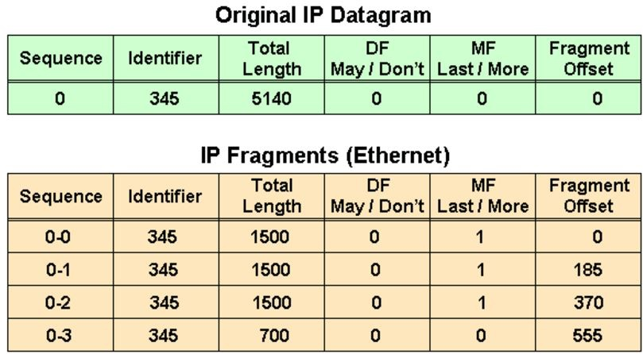
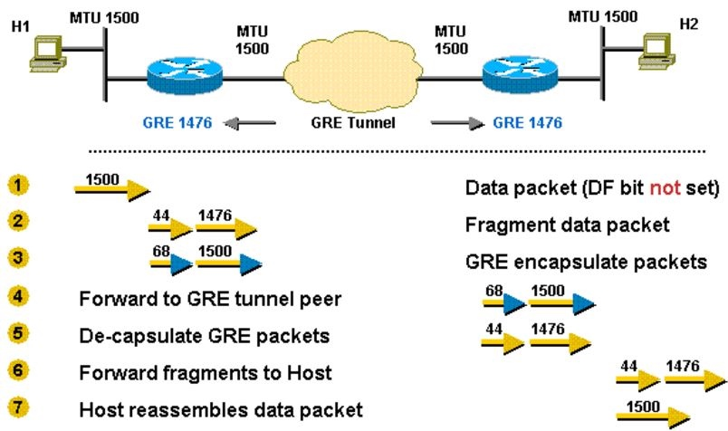
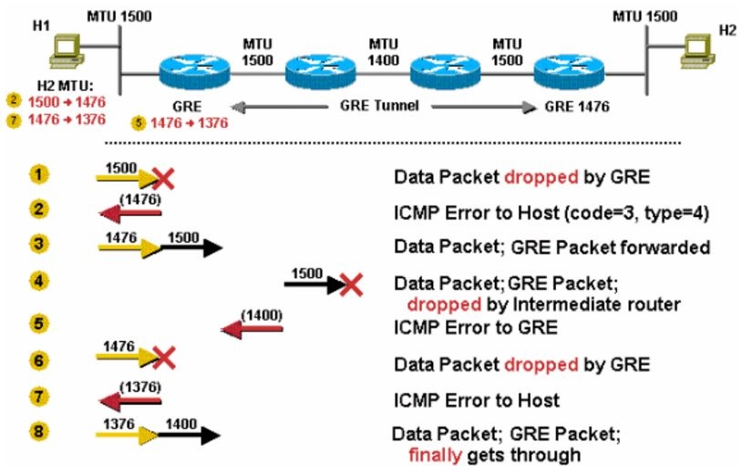
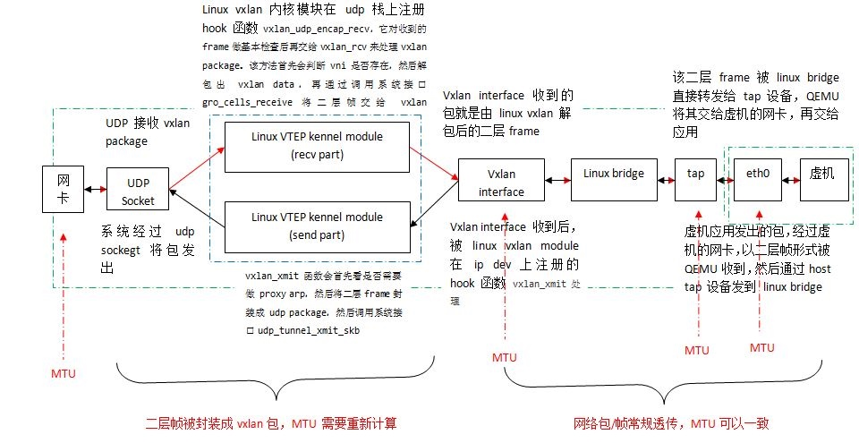

分段 (fragmentation)
老的内核通常在IP层处理IP分段，IP层可以接收0~64KB的数据。因此，当数据IP packet大于PMTU时，就必须把数据分成多个IP分段。 较新的内核中，L4会尝试进行分段：L4不会再把超过PMTU的缓冲区直接传给IP层，而是传递一组和PMTU相匹配的缓冲区。这样，IP层只需要给每个分段增加IP报头。但是这并不意味着IP层就不做分段的工作了，一些情况下，IP层还会进行分段操作。
- 分段是指将一个IP包分成多个传输，在接收端 IP 层重新组装
- 一个 IP 包能否分包，取决于它的 DF 标志位：DF bit (0 = “may fragment,” 1 = “don’t fragment”)
- 分包后，每个分段有 MF 标志位：MF bit (0 = “last fragment,” 1 = “more fragments”)

第一个表格中：
- IP 包长度 5140，包括 5120 bytes 的 payload
- DF = 0， 允许分包
- MF = 0， 这是未分包
第二个表格中：
- 0-0 第一个分包: 长度 1500 = 1480 (payload) + 20 (IP Header). Offset(起始偏移量): 0
- 0-1 第二个分包: 长度 1500 = 1480 (payload) + 20 (IP Header). Offset: 185 = 1480 / 8
- 0-2 第三个分包: 长度 1500 = 1480 (payload) + 20 (IP Header). Offset: 370 = 185 + 1480/8
- 0-3 第四个分包: 长度 700 = 680 (payload, = (5140 - 20) - 1480 * 3) + 20 (IP Header) . Offset: 555 = 370 + 1480/8
需要注意的是，只有第一个包带有原始包的完整 IPv4 + TCP/UDP 信息，后续的分包只有 IPv4 信息。
分包带来的问题：
- sender overhead：需要消耗 CPU 去分包，包括计算和数据拷贝。
- receiver overhead：重新组装多个分包。在路由器上组装非常低效率，因此组装往往在接收主机上进行。
- 重发 overhead：一个分包丢失，则整个包需要重传。
- 在多个分包出现顺序错开时，防火墙可能将分到当无效包处理而丢弃。
TCP fragmentation
每个TCP数据包（segment）的大小受MSS（TCP_MAXSEG选项）限制。最大报文段长度 ( MSS )表示 TCP 传往另一端的最大块数据的长度。当一个连接建立时（SYN packet）, 连接的双方都要通告各自的MSS。
一般说来,如果没有分段发生, MSS还是越大越好。报文段越大允许每个报文段传送的数据就越多,相对IP和TCP首部有更高的网络利用率。当TCP发送一个SYN时,或者是因为一个本地应用进程想发起一个连接,或者是因为另一端的主机收到了一个连接请求,它能将MSS值设置为外出接口上的MTU长度减去固定的IP首部(20 bytes)和TCP首部长度(20 bytes)。对于一个以太网，MSS值可达1460字节。详细参考tcp_sendmsg。
TCP/SCTP会将数据按MTU进行切片，然后3层的工作只需要给传递下来的切片加上 ip头就可以了(也就是说调用这个函数的时候,其实4层已经切好片了)。
Segmentation offload
现在很多网卡本身支持数据分片，这样，上层L4/L3就可以不用进行分片(最大64KB)，而由NIC来完成，从而提高网络性能。
TCP Segmentation Offload (TSO)
TSO是使得网络协议栈能够将超过PMTU的TCP数据包推送至网卡，然后网卡执行分片工作，这样减轻了CPU的负荷。
UDP Fragmentation Offload (UFO)
Uses the UDP protocol to send large packets. Uses the NIC to handle IP fragmentation into MTU sized packets for large UDP datagrams.
Generic Segmentation Offload (GSO)
Uses the TCP or UDP protocol to send large packets. If the NIC cannot handle segmentation/fragmentation, GSO performs the same operations, bypassing the NIC hardware. This is achieved by delaying segmentation until as late as possible, for example, when the packet is processed by the device driver.
Large Receive Offload (LRO)
Uses the TCP protocol. All incoming packets are re-segmented as they are received, reducing the number of segments the system has to process. They can be merged either in the driver or using the NIC. A problem with LRO is that it tends to resegment all incoming packets, often ignoring differences in headers and other information which can cause errors. It is generally not possible to use LRO when IP forwarding is enabled. LRO in combination with IP forwarding can lead to checksum errors. Forwarding is enabled if /proc/sys/net/ipv4/ip_forward is set to 1.
Generic Receive Offload (GRO)
Uses either the TCP or UDP protocols. GRO is more rigorous than LRO when resegmenting packets. For example it checks the MAC headers of each packet, which must match, only a limited number of TCP or IP headers can be different, and the TCP timestamps must match. Resegmenting can be handled by either the NIC or the GSO code.
PMTU (Path Maximum Transmission Unit Discovery)
PMTU 的用途是动态的确定从发送端到接收端整个路径上的最小 MTU，从而避免分包。注意，PMTU 只支持 TCP，对其他协议比如 UDP 无效。而且，如果发送方已经开启了 PMTU，那么它发送的所有 TCP/IP 包的 DF 标志都被设置为 1 即不再允许分包。当网络路径上某个路由器发现发送者的包因为超过前面转发路径的 MTU 而无法发送时，它向发送者返回一个 ICMP “Destination Unreachable” 消息，其中包含了那个 MTU，然后发送者就会在它的路由表中将该mtu值保存下来，再使用较小的 MTU 重新发出新的较小的包。
例子1：超过 MTU，DF = 0 => 路由器分包、发送，接收主机组装

例子2：超过，DF = 1 => PMTU，发送者重新以小包发送


[1] http://www.cnblogs.com/sammyliu/p/5079898.html
[2] http://www.cisco.com/c/en/us/support/docs/ip/generic-routing-encapsulation-gre/25885-pmtud-ipfrag.html
[3] http://blog.csdn.net/opens_tym/article/details/17658569